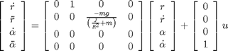
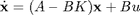
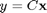
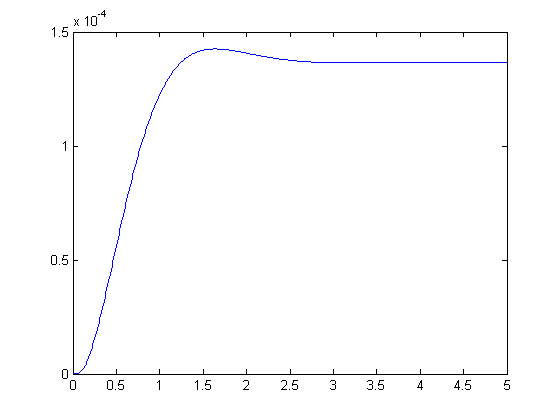
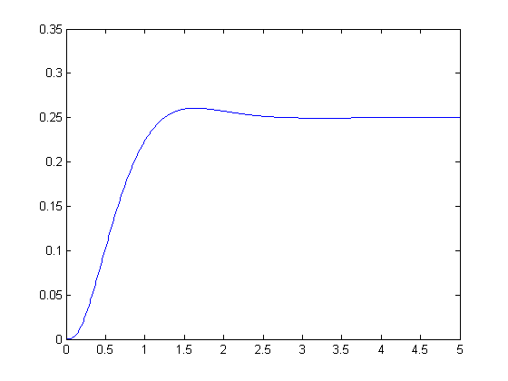

Ball & Beam: State-Space Methods for Controller Design
Key MATLAB commands used in this tutorial are: ss , place , lsim
Contents
The state-space representation of the ball and beam example is given below:
(1)
(2)![$$ y = \left[{\begin{array}{cccc} 1 & 0 & 0 & 0 \end{array}}\right]
\left[{\begin{array}{c} r \\ \dot{r} \\ \alpha \\ \dot{\alpha}
\end{array}}\right] $$](Content/BallBeam/Control/StateSpace/html/BallBeam_ControlStateSpace_eq41969.png)
Unlike the previous examples where we controlled the gear's angle to control the beam and ball, here we are controlling . By doing this we are essentially controlling a torque applied at the center of the beam by a motor. Therefore, we do not need a gear and lever system.
The design criteria for this problem are:
- Settling time less than 3 seconds
- Overshoot less than 5%
To see the derivation of the equations for this problem refer to the Ball & Beam: System Modeling page.
Full state-feedback controller
We will design a controller for this physical system that utilizes full state-feedback control. A schematic of this type of system is shown below:

Recall, that the characteristic polynomial for this closed-loop system is the determinant of (sI-(A-BK)), where s is the Laplace variable. For our system the A and B*K matrices are both 4x4. Hence, there should be four poles for our system. In designing our full-state feedback controller we can move these poles anywhere we want.
For our design we desire an overshoot of less than 5% which corresponds to a zeta of 0.7 (please refer to your textbook for the relationship between overshoot and damping ratio). On a root locus this criterion is represented as a 45 degree line emanating from the origin and extending out into the left-half plane. We want to place our desired poles on or beneath this line. Our next criterion is a settling time less than 3 seconds, which corresponds to a sigma = 4.6/Ts = 4.6/3 = 1.53, represented by a vertical line at -1.53 on the root locus. Anything beyond this line in the left-half plane is a suitable place for our poles. Therefore we will place our poles at -2+2i and -2-2i. We will place the other poles far to the left for now, so that they will not affect the response too much. To start with place them at -20 and -80. Now that we have our poles we can use MATLAB to find the controller (K matrix) by using the place command. Copy the following code to an m-file to model the system and find the K matrix:
m = 0.111;
R = 0.015;
g = -9.8;
J = 9.99e-6;
H = -m*g/(J/(R^2)+m);
A = [0 1 0 0
0 0 H 0
0 0 0 1
0 0 0 0];
B = [0;0;0;1];
C = [1 0 0 0];
D = [0];
ball_ss = ss(A,B,C,D);
p1 = -2+2i;
p2 = -2-2i;
p3 = -20;
p4 = -80;
K = place(A,B,[p1,p2,p3,p4])
K =
1.0e+03 *
1.8286 1.0286 2.0080 0.1040
After adding the K matrix, the state space equations now become:
(3)
(4)
We can now simulate the closed-loop response to a 0.25m step input by using the lsim command. Add the following to your m-file. Run your m-file and you should get the following plot:
t = 0:0.01:5; u = 0.25*ones(size(t)); sys_cl = ss(A-B*K,B,C,D); [y,t,x] = lsim(sys_cl,u,t); plot(t,y)
From this plot we see that there is a large steady state error, to compensate for this, we will need to add a reference input compensation (explained in next section). However, the overshoot and settling time criteria are met. If we wanted to reduce the overshoot further, we could make the imaginary part of the pole smaller than the real part. Also, if we wanted a faster settling time we would move the poles further in the left-half plane. Feel free to experiment with the pole positions to see these trends.
Reference input
Now we want to get rid of the steady-state error. In contrast to the other design methods, where we feedback the output and compare it to the reference input to compute an error, with a full-state feedback controller we are feeding back both states. We need to compute what the steady-state value of the states should be, multiply that by the chosen gain K, and use a new value as our reference for computing the input. This can be done by adding a constant gain Nbar after the reference. The schematic below shows this relationship:

Nbar can be found using the user-defined function rscale.m. Download it here, rscale.m and place it in the directory that your m-file is in. Copy the following to your m-file and run it to view the step response with Nbar added.
Nbar=rscale(ball_ss,K) t = 0:0.01:5; u = 0.25*ones(size(t)); [y,t,x]=lsim(Nbar*sys_cl,u,t); plot(t,y)
Nbar = 1.8286e+03
Now the steady-state error has been eliminated and all the design criteria are satisfied.
Note: A design problem does not necessarily have a unique answer. Using this method (or any other) may result in many different compensators. For practice you may want to go back and try to change the pole positions to see how the system responds.